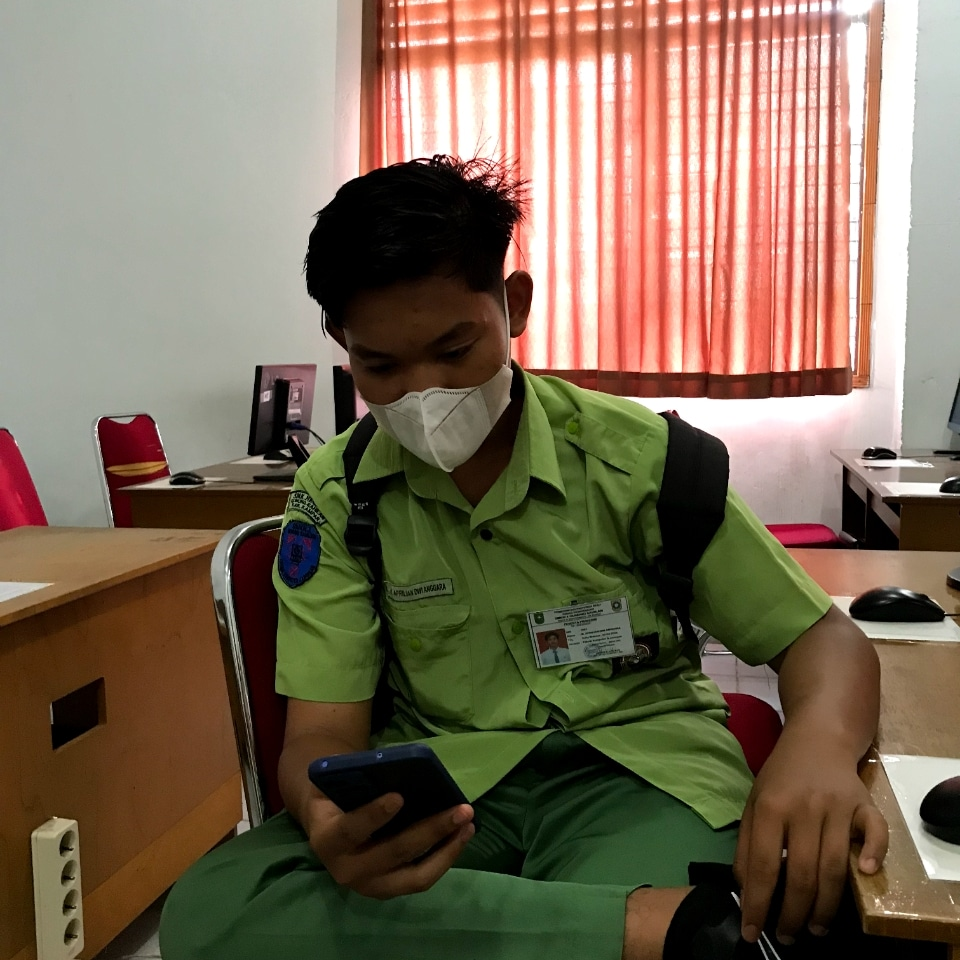
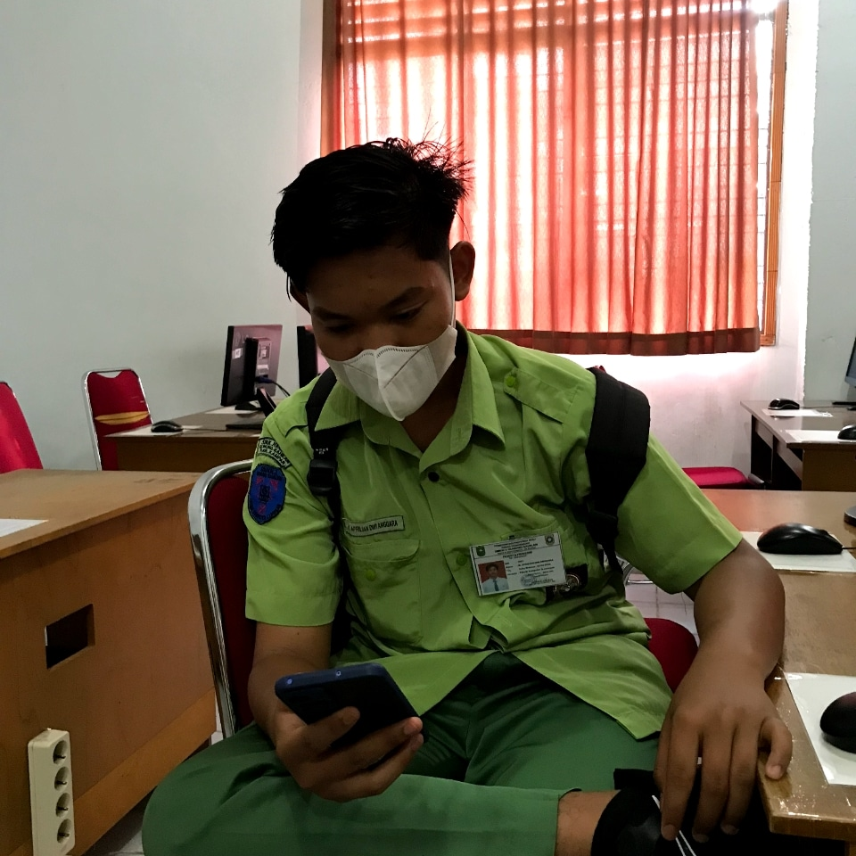
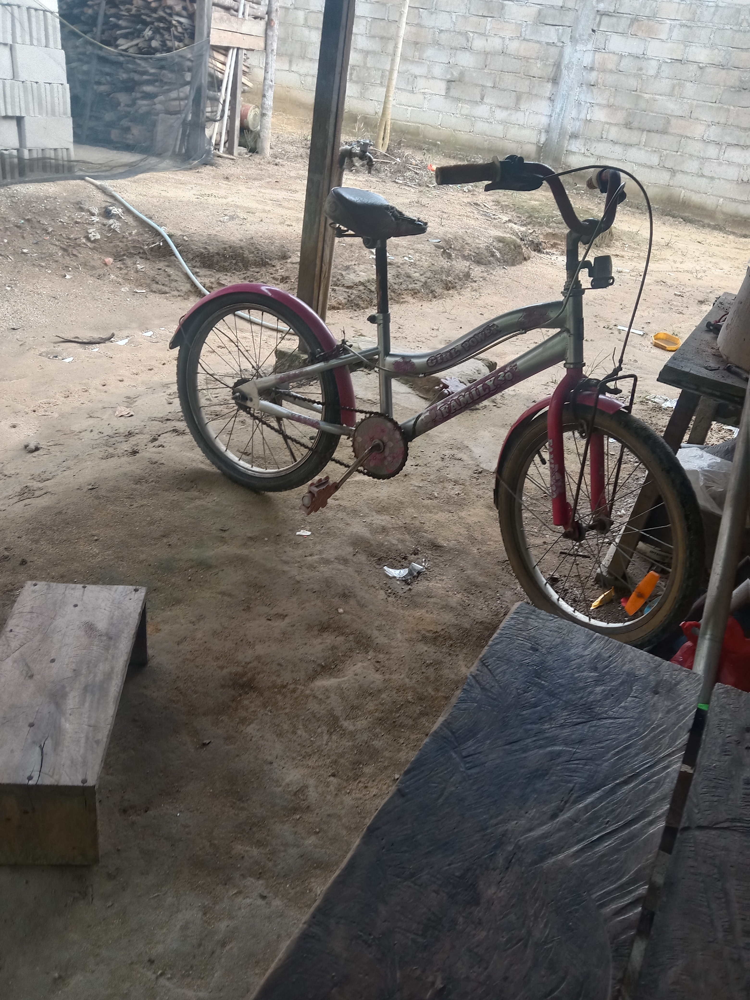
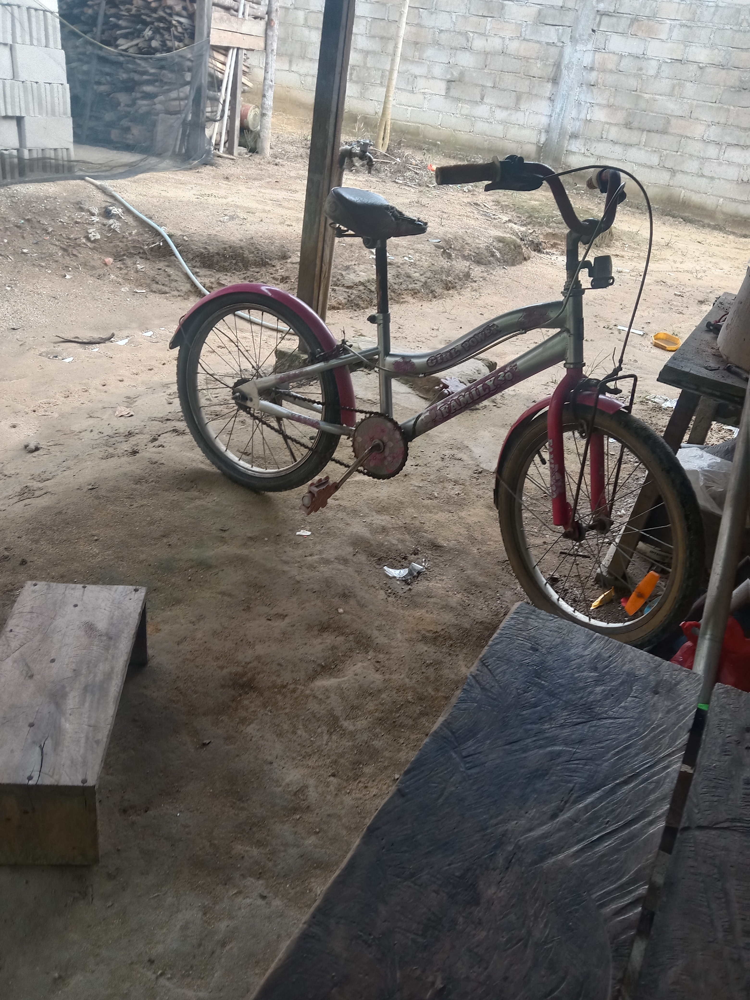

| Home | Profil | Gallery |
| sd | smp | smk |
"Orang yang sabar bukan berarti dia yang tidak akan pernah marah. Namun mereka hanya sebagian orang yang masih bisa tetap diam saat melihat masalah. Sebab adakalanya sebuah keputusan tidak sesuai dengan apa yang kita harapkan. Tetapi dari situlah kita belajar untuk ikhlas dan sabar ketika apa yang kita harapkan tidak sesuai dengan apa yang kita inginkan."
"Jangan pernah menyerah saat hidup memberi kita seratus alasan untuk bersedih dan menangis, jangan pula menyerah ataupun berkeluh kesah dengan keadaan hidup kita sekarang. Sebab apa yang sekarang kita anggap kurang bisa jadi sangat berlebih bagi orang lain yang nasibnya kurang beruntung dibandingkan dengan kita."
"Kunci utama dalam menghadapi suatu cobaan adalah sabar, ikhlas, ikhtiar, dan tawakal, karena Allah tidak akan memberi cobaan kepada hamba-Nya melebihi batas kemampuan mereka."
"Kamu harus membiarkan orang pergi. Setiap orang yang ada dalam hidupmu ditakdirkan untuk berada dalam perjalananmu, tetapi tidak semua dari mereka dimaksudkan untuk tinggal sampai akhir."
"Hambatan tidak bisa menghentikan Anda. Masalah tidak bisa menghentikan Anda. Orang lain tidak bisa menghentikan Anda. Hanya Anda yang bisa menghentikan Anda." - Jeffrey Gitomer
 

 
